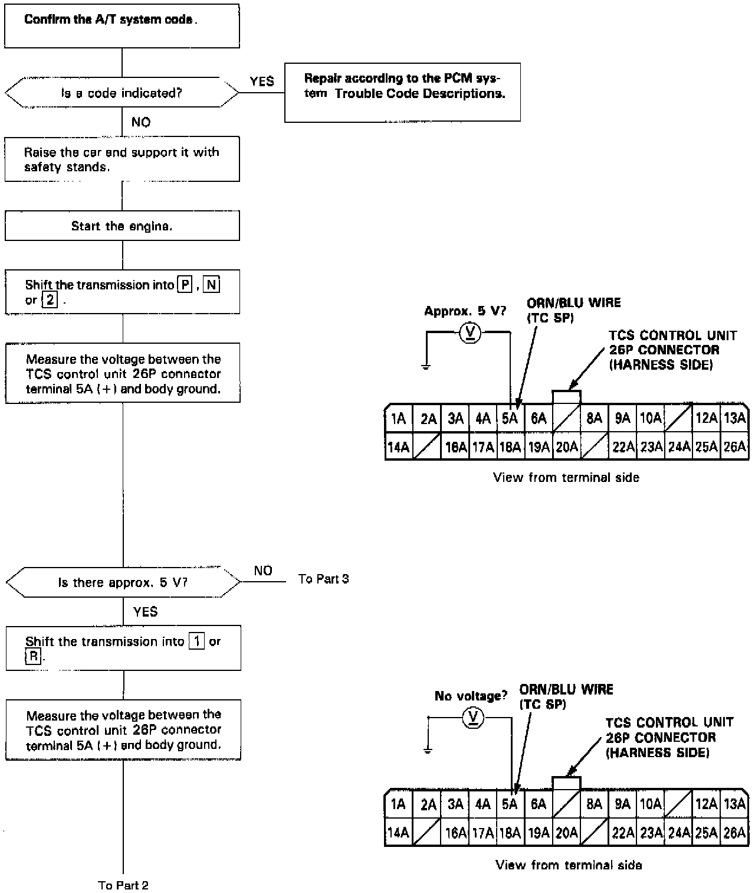
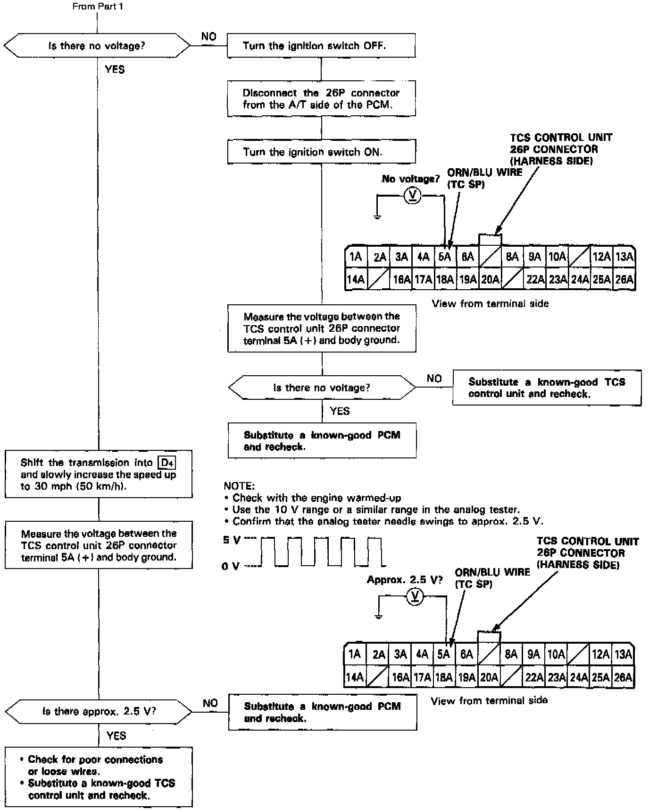
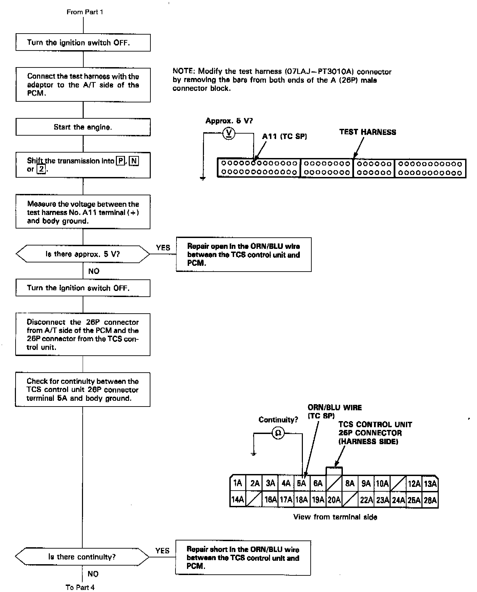
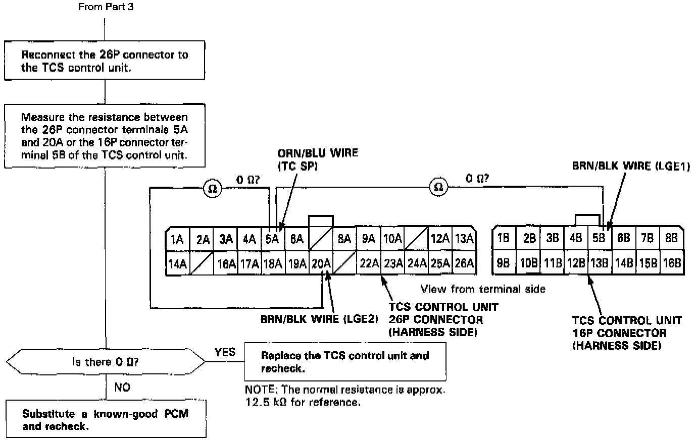

DTC 6-1




NOTE: When the back-up voltage is disconnected from the TCS control unit, the TCS control unit on an A/T model goes into the M/T mode. Once the engine is started, however, the TC SP signal switches the TCS control unit back to the A/T mode. The system mode can be confirmed by performing the "steering angle sensor system check".